Services in Cagliari
Cagliari offers a wide range of services and facilities for both visitors and residents. Whether you are planning a holiday or exploring the city for the first time, you can find different accommodation options, traditional restaurants, public transport connections and useful everyday services. The city also provides tourist information and facilities that make it easier to discover its attractions and experience local life. In this section, you will find some useful information to help you organise your stay and make the most of your time in Cagliari.
Accomodation
Cagliari offers several types of accommodation to suit different budgets and travel needs. Visitors can choose between hotels, bed and breakfasts, guesthouses and holiday apartments. Some accommodation is located in the historic centre, close to the main attractions, while other options can be found in quieter residential areas or near the sea.
Types of accommodation
-
Hotels
Hotels are available in different categories and price ranges throughout Cagliari. Many accommodation options can be found in the city centre and along the coast. Staying in the central areas, such as Marina or Stampace, can be convenient for visitors who want to explore the historic districts, restaurants and main attractions on foot. Hotels in the coastal area, especially near Poetto Beach, may be more suitable for travellers who want to spend more time by the sea. Depending on the category, hotels can offer services such as reception, breakfast, daily cleaning and private parking.
-
Bed and Breakfasts
Bed and breakfasts are a popular accommodation option in Cagliari, especially for visitors looking for a smaller and more personal place to stay. They can be found in several parts of the city, including the historic centre, the Castello district and areas near the seafront. The Marina, Stampace and Villanova districts are interesting locations for visitors who want to experience the atmosphere of the old town. Breakfast is often included, although services and facilities vary from one property to another, so it is always important to check the conditions before booking.
-
Holiday apartments
Holiday apartments are another option for visitors who prefer more independence during their stay. They are available in different neighbourhoods of Cagliari, including the historic centre and the areas closer to Poetto Beach. Many apartments provide facilities such as a kitchen, living area and washing machine, which can be useful for families, groups of friends or people planning a longer holiday. Before booking, visitors should check the exact location, the available facilities, check-in arrangements and whether additional costs are included in the final price.
Choosing the right area
Each neighbourhood of Cagliari has a different atmosphere. The best area depends on whether you prefer history, nightlife, local life or the beach.
| Area | Description | Pros | Cons |
|---|---|---|---|
| Marina | Located near the port and Via Roma, Marina is one of the liveliest areas of the city. It has many restaurants, cafés and shops, and it is a convenient starting point for exploring the historic centre. | Central location, easy access to the train station and port, plenty of places to eat | Some streets can be noisy, especially in the evening and during the summer |
| Stampace | A historic neighbourhood close to the Roman Amphitheatre, the Botanical Garden and several important churches. It offers a local atmosphere while remaining within walking distance of the city centre. | Close to major attractions, local restaurants and a central location | Some streets are steep and there may be fewer nightlife options than in Marina |
| Castello | The oldest district of Cagliari, situated on a hill above the city. It is known for its historic buildings, museums, narrow streets and panoramic views over the city and the sea. | Unique historic atmosphere, monuments and beautiful views | Steep streets and stairs can make walking with luggage difficult; fewer everyday services. |
| Villanova | A traditional neighbourhood with narrow streets, small shops, churches and residential buildings. It is generally quieter than Marina and offers a more local atmosphere. | Peaceful surroundings, local character and a pleasant location near the historic centre | Fewer restaurants and nightlife options, and some areas are uphill |
| Bonaria and Monte Urpinu | These residential areas are known for their quieter atmosphere and green spaces. Bonaria is home to the Basilica of Our Lady of Bonaria, while Monte Urpinu offers a large park with views over the city. | Calmer surroundings, green spaces and a good choice for visitors who prefer a residential area | Less central than the historic districts, so public transport or more walking may be needed |
| San Bendetto | A lively residential area known for its large municipal market, where visitors can discover local food and Sardinian products. It also has shops, cafés and everyday services. | Local atmosphere, food market, shops and useful services | It is outside the oldest part of the historic centre, so some attractions require a walk or a bus journey |
| Poetto | Cagliari's main beach area, with a long sandy coastline, beach clubs, cafés and restaurants. It is ideal for visitors who want to spend much of their holiday by the sea. | Direct access to the beach, seaside activities and a relaxed summer atmosphere | Farther from the historic centre, with bus journeys needed to reach many city attractions; some businesses are seasonal |
Official Cagliari Tourism Website
Use the official city tourism website to explore all the accommodation options in Cagliari, including hotels, B&Bs, guesthouses and holiday rentals.
Where to sleep - Cagliari TourismTourist Tax
Visitors staying overnight in Cagliari may have to pay a tourist tax, which is usually collected by the accommodation when checking out. The amount depends on the type and category of accommodation. For hotels, the rate is linked to the number of stars; other accommodation types have different rates.
Find out more by clicking hereRestaurants and Local Food
Cagliari offers a rich food culture influenced by its history, Mediterranean location and Sardinian traditions. The local cuisine combines fresh seafood, traditional pasta dishes, meat, cheeses and delicious desserts. Visitors can enjoy these specialities in traditional restaurants, small trattorias, local markets and cafés throughout the city. Exploring the local food is a great way to discover Sardinian culture and experience the everyday life of Cagliari.
Traditional Sardinian and Cagliari Dishes
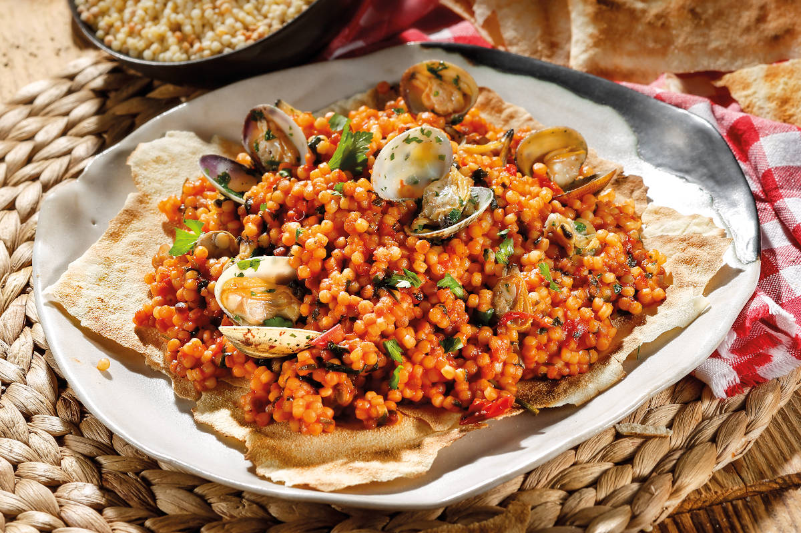
Fregula con arselle
Fregula is a traditional Sardinian pasta, made by rolling tiny balls of dough by hand and toasting them in the oven. Its origins date back several centuries, and it is particularly popular in seafood dishes. The most traditional version is prepared with fresh clams, garlic, tomatoes and parsley, slowly cooked in a flavourful broth.
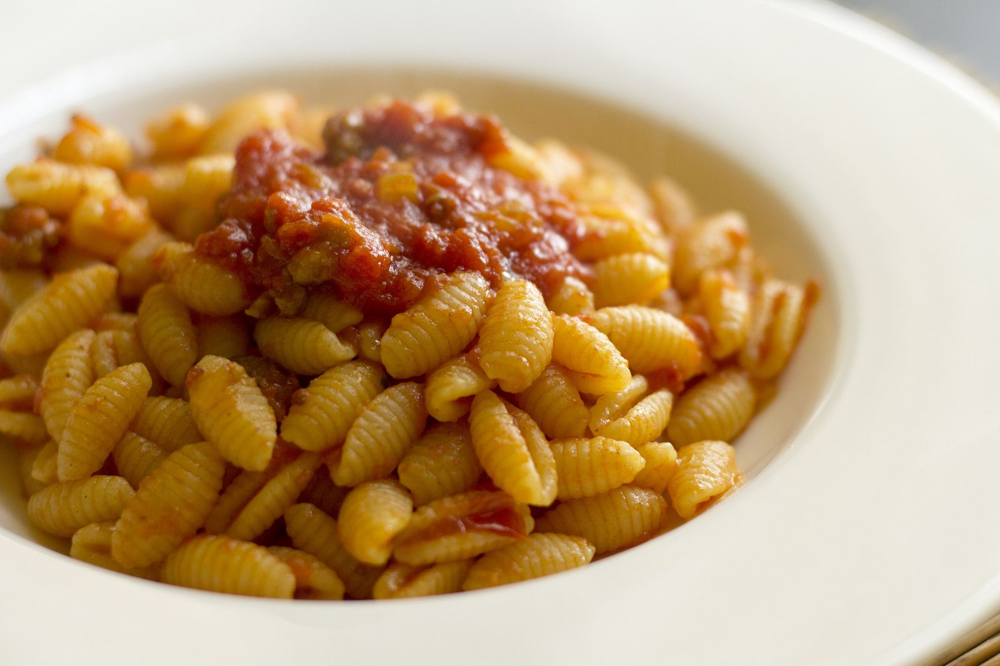
Malloreddus alla campidanese
Malloreddus are small, ridged pasta shapes, traditionally made by hand and often known as Sardinian gnocchetti. The classic recipe, called malloreddus alla Campidanese, includes tomato sauce, Sardinian sausage, saffron and grated pecorino cheese. They are particularly appreciated for their firm texture and ability to absorb the sauce.
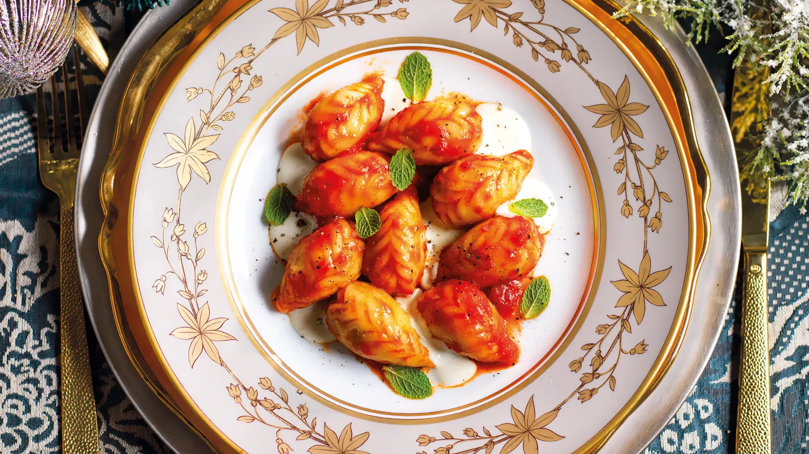
Culurgiones
Culurgiones are traditional Sardinian stuffed pasta, easily recognisable by their beautiful wheat-spike-shaped closure. Their filling is usually made with potatoes, pecorino cheese and fresh mint. They are often served with a simple tomato sauce and a sprinkling of grated cheese.
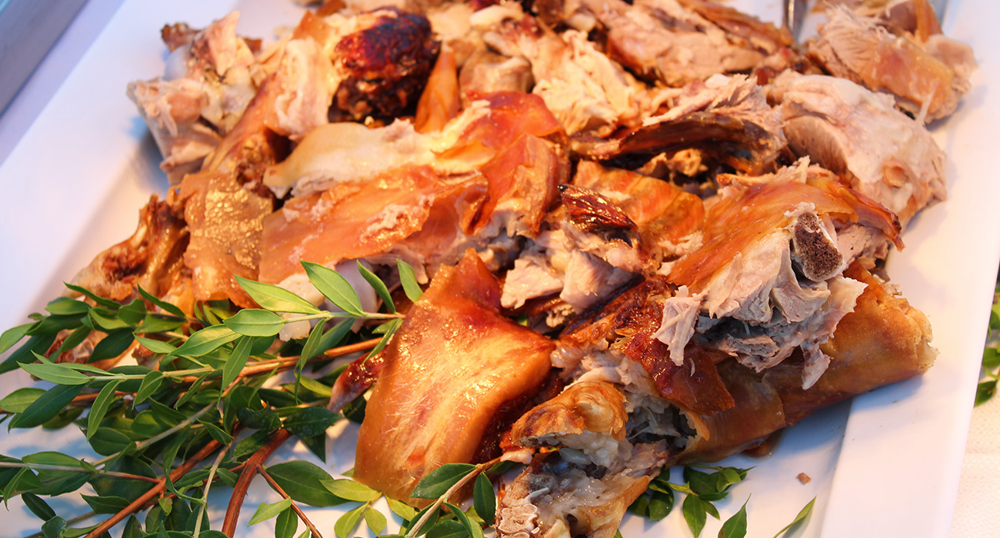
Porceddu
Porceddu is a traditional Sardinian dish consisting of a young suckling pig slowly roasted on a spit over an open fire. The meat is seasoned with salt and aromatic herbs, particularly myrtle, which gives it a distinctive fragrance. It is usually served in pieces, with crispy golden skin and tender meat.
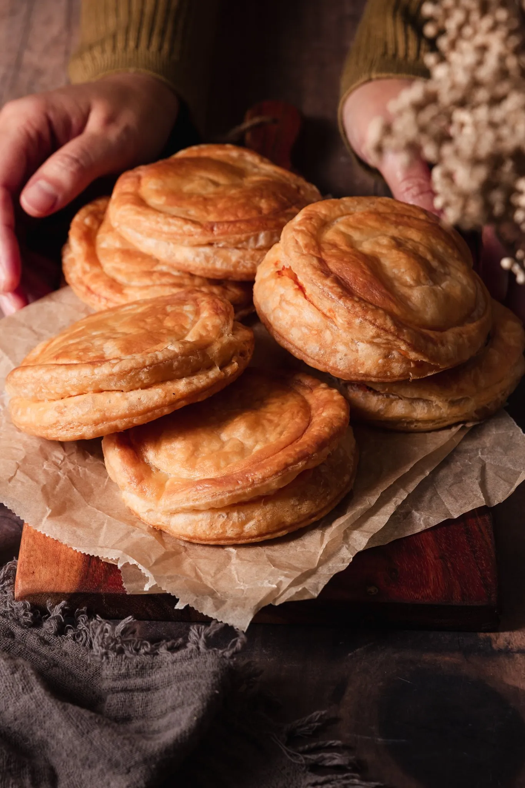
Pizzetta sfoglia
Pizzetta sfoglia is a traditional savoury pastry widely found in Cagliari's bakeries and cafés. It consists of two round layers of puff pastry filled with tomato sauce, capers and sometimes anchovies. It is baked until golden and crispy and is commonly eaten as a quick breakfast or snack.
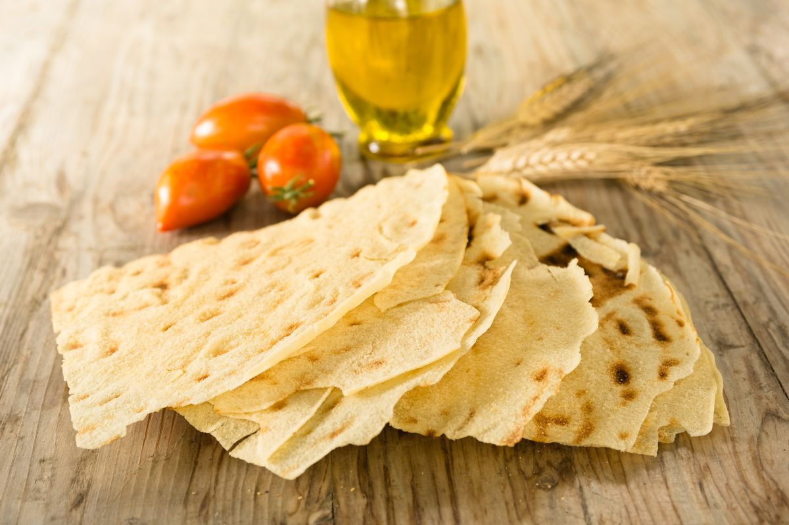
Pane carasau
Pane carasau is a traditional Sardinian flatbread, originally made by shepherds because it could be stored for long periods away from home. It is extremely thin, dry and crispy, with a round shape and a light golden colour. It can also be seasoned with olive oil and salt and briefly baked, becoming pane guttiau.
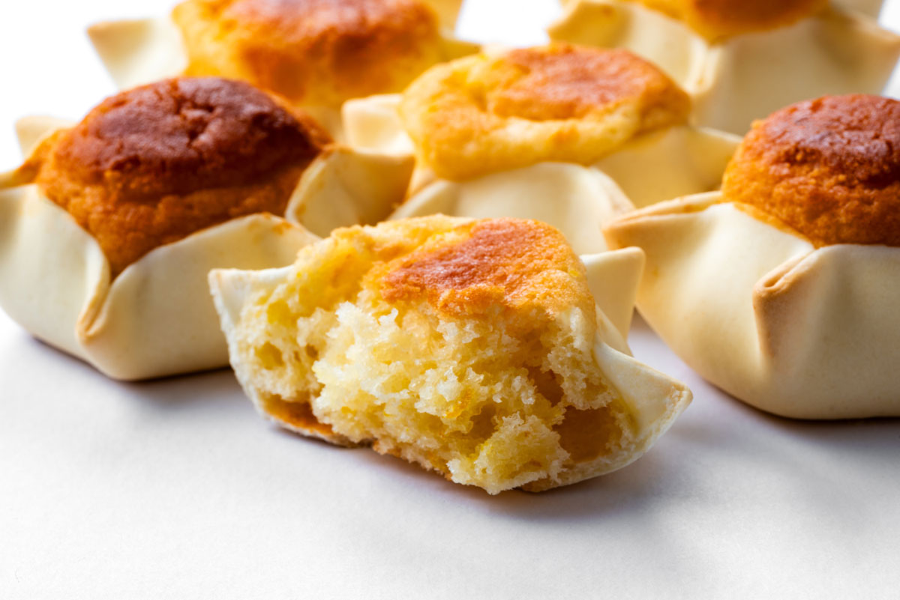
Pardulas
Pardulas are small traditional Sardinian pastries made with a thin pastry shell and a filling of fresh ricotta cheese. The filling is flavoured with saffron, sugar and citrus zest, usually lemon or orange. They are typically baked until lightly golden and are particularly popular during Easter celebrations.
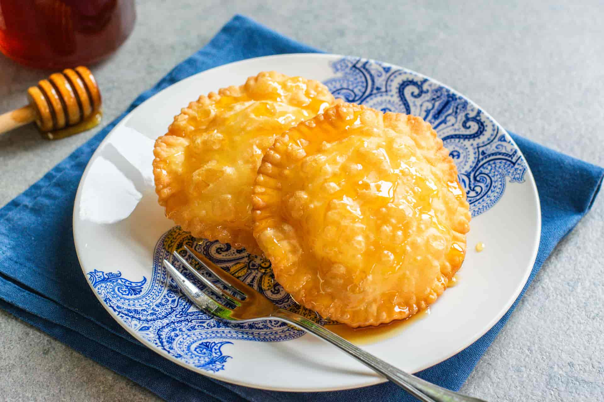
Seadas
Seadas are large, round pastries made with a thin dough and filled with fresh cheese, usually flavoured with lemon zest. They are deep-fried until golden and served warm, traditionally covered with honey. The combination of melted cheese, crispy pastry and honey is characteristic of this traditional dessert.
Public Transport
Cagliari offers different ways to move around the city and explore its surroundings. Public transport is a convenient option for reaching the main attractions, residential areas, the railway station and the Poetto beach. The local transport network includes buses and a light rail system, while regional buses and trains connect the city with other destinations in Sardinia. Visitors can also choose alternative ways of travelling, such as walking, cycling or taking a taxi.
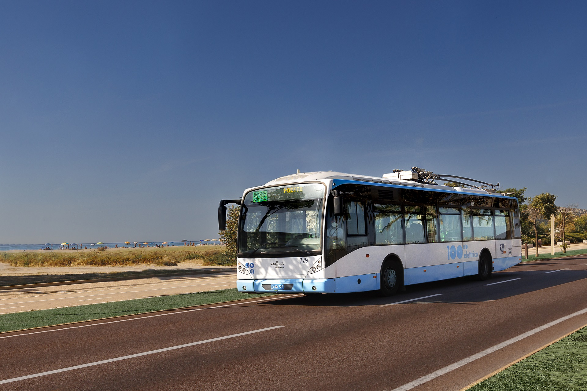
City Buses
Buses are the main form of public transport in Cagliari and are operated by CTM. The network connects the city centre with residential neighbourhoods, shopping areas and Poetto beach. They are a convenient way to explore different parts of the city without renting a car.
Routes and destinations
CTM operates the urban bus network of Cagliari, connecting the city centre with residential neighbourhoods, shopping areas, the railway station, the university area and Poetto beach. Its services also extend beyond the city boundaries, reaching nearby municipalities such as Monserrato, Selargius, Quartu Sant'Elena and Quartucciu. To plan a journey, passengers can use Google Maps or the official CTM BusFinder app. BusFinder provides route planning, real-time information about bus arrivals, timetables and nearby stops. The CTM website and app also allow users to consult the routes and stops served by each bus line. For a complete overview of the network, visitors can consult the official CTM network map, while to see the stops for every line and the lates news about possible route deviations, they can consult the official CTM website.
Tickets and fares
CTM offers different types of tickets depending on how often and how long passengers need to travel. Tickets can be purchased at authorised shops, newsstands and through mobile applications such as BusFinder and Around Sardinia. Some tickets can also be purchased on board, where this service is available, at an additional cost. The available options include single-journey tickets, multi-trip tickets and integrated tickets that can also be used on MetroCagliari. Visitors staying in Cagliari for several days may find an integrated daily or weekly ticket more convenient than purchasing individual tickets.
Useful information
All tickets must be validated when boarding the bus, including when changing vehicles. The validation procedure depends on the type of ticket:
contactless tickets and CTM cards must be held against the electronic validator until the green light confirms successful validation, while
tickets purchased through BusFinder must be activated by scanning one of the QR codes displayed on board.
All bus stops operate on request:
passengers waiting at a stop should signal the approaching driver by raising their hand, while passengers already on board should press the stop button
before reaching their destination. Remember to keep your ticket until the end of the journey, as it may be checked by authorised staff.
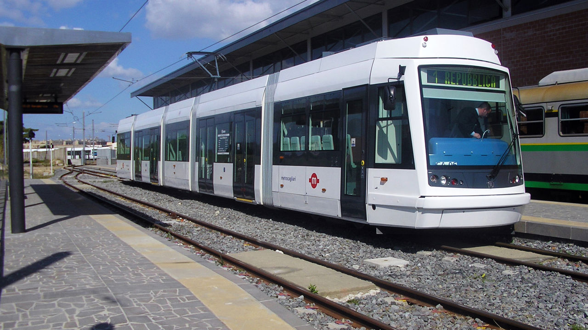
MetroCagliari
MetroCagliari is Cagliari's light rail system, a type of urban transport similar to a modern tram. Unlike an underground metro, it runs on surface-level tracks and stops at dedicated stations along its route. It is operated by ARST and provides a useful connection between the city centre, the Monserrato area and the Policlinico University Hospital. It is particularly convenient for students, hospital visitors and people travelling between Cagliari and nearby areas without using a car.
Routes and destinations
The currently operating urban light rail route connects Piazza Repubblica in central Cagliari with the Policlinico University Hospital in Monserrato, passing through several intermediate stops, including the San Gottardo area. The service is particularly useful for reaching the university and hospital facilities. Passengers can consult the official ARST website to check the route, station information and updated departure times. The online timetable provides the departure times for each stop and direction. It is advisable to check the timetable before travelling, as service frequency may vary throughout the day.
Tickets and fares
MetroCagliari accepts ARST metropolitan tickets as well as certain integrated tickets and travel passes that can also be used on CTM buses. This makes it possible to combine different forms of public transport using a suitable integrated ticket. Tickets can be purchased at staffed ARST stations, automatic ticket machines and authorised sales points. Before travelling, passengers should check that their ticket is valid for both the route and the transport operators they intend to use.
Construction works and useful information
MetroCagliari is undergoing a major expansion project aimed at improving connections within the city. One of the planned extensions will connect Piazza Repubblica with Piazza Matteotti, where Cagliari's main railway station is located. This will make it easier for passengers to transfer between the light rail system and regional trains. The existing service currently connects Piazza Repubblica with the Policlinico area in Monserrato. Construction works and changes to the surrounding streets may affect access and traffic in some parts of the city.
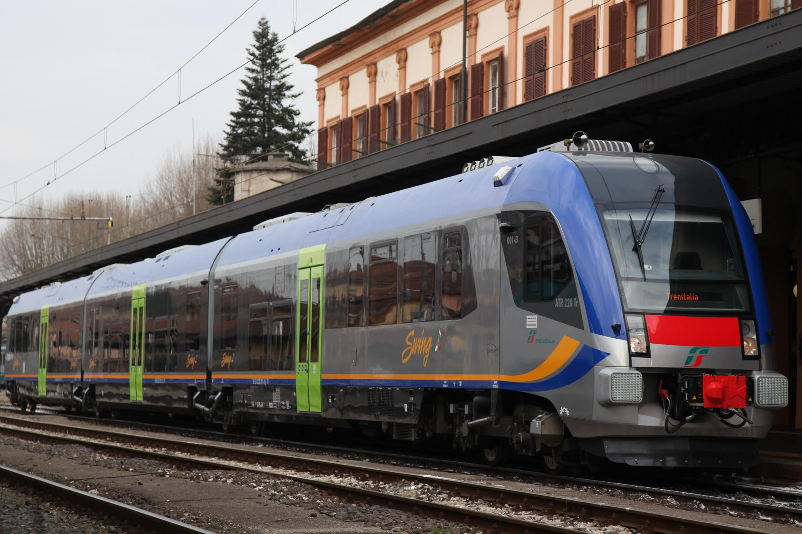
Trains
Trains are a convenient way to travel from Cagliari to other towns and cities across Sardinia. They are particularly useful for visitors who want to explore destinations outside the metropolitan area without renting a car. Cagliari's main railway station is located in Piazza Matteotti, in the city centre, within walking distance of the port and several bus stops. Regional train services are operated by Trenitalia and connect the city with destinations in different parts of the island.
Routes and destinations
Regional trains connect Cagliari with several important destinations in Sardinia, including Oristano, San Gavino Monreale, Macomer, Sassari and Olbia. These connections allow visitors to explore different areas of the island, from the western coast to the north. Some services also connect Cagliari with nearby towns such as Decimomannu and Elmas. Passengers can plan their journeys and check available connections through the Trenitalia website or app. A regional railway map and the official timetable for Sardinia are also available online.
Tickets and fares
Train tickets can be purchased through the Trenitalia website and mobile app, at station ticket offices, from self-service machines and at authorised
sales points. The price of a regional train ticket depends on the distance travelled and the selected route, so there is no single fare for all journeys
from Cagliari. Passengers can enter their departure and arrival stations online to check the available trains and the exact ticket price.
Digital
regional tickets are personal and are automatically activated at the scheduled departure time of the selected train. Paper tickets, on the other hand,
must be validated using the machines at the station before boarding.
Useful information
Cagliari is directly connected to Elmas Airport by regional trains. The airport has its own railway station, which is linked to the terminal by a pedestrian walkway. The journey between the airport and Cagliari's city centre takes less than ten minutes, making the train one of the quickest ways to reach the city after landing. Trenitalia publishes an average frequency of approximately one train every twenty minutes on weekdays.
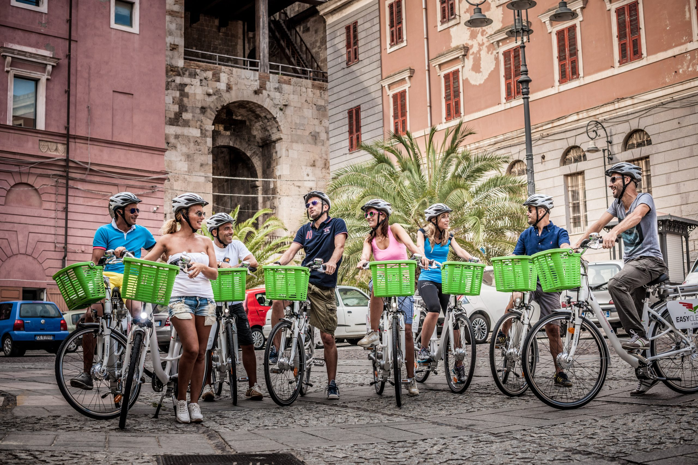
Other ways to get around
idk what to write yet
Bicycles
idk what to write yet
Taxis
idk what to write yet